Дети успевают пройти игру, переключиться на активность, поздравить именинника, поесть торт и завершить праздник ярким финалом.
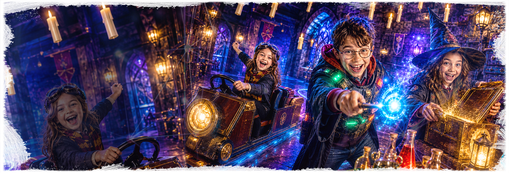
Иркутск: мк-н Юбилейный, 17; ул. Баррикад, 33.
Праздник под ключ
Праздник под ключ для детского дня рождения в Иркутске: несколько игр и активностей, ведущий, чайная зона, фото, дискотека, бумажное шоу, сахарная вата и понятный тайминг для родителей.
7+10+ гостей4 часаИркутск80 000 руб.
Почему это сильнее обычного квеста на день рождения
Обычный квест закрывает только игровую часть. Пакет Под ключ закрывает весь праздник: программу, несколько активностей, чайную зону, поздравление, фото, финал и спокойный тайминг для родителей.
Площадки: мк-н Юбилейный, 17; ул. Баррикад, 33; ул. Восточная, 10А. Подбираем адрес под сценарий и компанию.
Базовая цена 80 000 руб. указана за 10 участников и уже включает питание. Следующие гости считаются по понятной доплате.
Питание уже входит в пакет, а торт и свою еду можно принести с собой. После игры дети остаются на площадке и продолжают праздник.
Что входит в пакет Под ключ
Пакет Под ключ - это большой готовый формат для родителей, которым нужно собрать сразу все: место, программу, ведущего, стол, фото, тайминг, шоу и понятные развлечения для гостей. В IQuest он рассчитан на 4 часа насыщенного праздника на одной площадке.
Мы берем на себя основной организационный процесс: проводим для детей увлекательные квесты с ведущим или актером, турниры, NERF, лазертаг, прятки в темноте, конкурсы, викторины, мафию, настольные игры, дискотеку с дым-машиной или мыльной пушкой и фотосъемку на память.
IQuest помогает провести день рождения ребенка без аренды кафе и отдельного поиска ведущих. На одной площадке дети проходят игру, а после переходят в чайную зону, где можно поздравить именинника, вынести торт и спокойно продолжить праздник.
Пакет Под ключ удобен для младших школьников, подростков, класса, спортивной команды или большой компании друзей. Программу подбираем по возрасту, городу, количеству гостей и настроению праздника.
Базовая организация
- подбор сценария, пакета и площадки в Иркутске;
- ведущий, актер или аниматор на игре;
- квест, NERF, лазертаг, прятки или комбинированная программа;
- чайная зона для торта, поздравления, детей и родителей;
- игры в чайной зоне, квизы, викторины, мафия и настольные игры;
- фотосъемка, дискотека, бумажное шоу, сахарная вата и питание по пакету.
Как пройдет игра
Приезжаете за 5 минутВстречаем гостей и помогаем с организацией.
Проходите инструктажОбъясняем правила, безопасность и формат игры.
Играете с ведущимВедущий держит темп и помогает по сценарию.
Чайная зона по желаниюМожно продолжить праздник с тортом и поздравлением.
Запишись на пакет Под ключ
1. Выберите дату и время, заполните форму
2. Укажите возраст и количество детей
3. В комментарии напишите: Под ключ
Пакет Под ключ за 80 000 руб.
Пакет рассчитан на 10 участников и длится 4 часа. Доплата за каждого следующего ребенка - 1500 руб./чел. Питание входит в стоимость пакета.
Гарри Поттер, Замок Дракулы, Космический корабль, Among Us, NERF, лазертаг или другой актуальный сценарий по возрасту, городу и свободному времени.
NERF, лазертаг, прятки или дополнительный квест. Состав игр подбираем под возраст детей, площадку и желаемый темп праздника.
В пакет входят чайная зона, квизы, викторины, дискотека, фотосъемка, бумажное шоу и сахарная вата, чтобы финал получился ярким.
В питание входит: пицца, фри, нагетсы, печенье, газированная вода, сок, посуда, обслуживание и чай. Свою еду и торт тоже можно принести с собой.
Что выбрать: отдельный квест, пакет или Под ключ
| Формат | Длительность | Что входит | Кому подходит | Цена |
|---|---|---|---|---|
| Отдельный квест | около 1 часа | сюжетная игра и ведущий по сценарию | небольшой компании, когда нужен только квест | от 1500 руб./чел. |
| Пакет праздника | 2 ч 40 мин - 3 часа | квест, активная игра, чайная зона, фото или анимация по пакету | дню рождения с понятной программой и столом | 25 000 руб. |
| Под ключ | 4 часа | несколько игр, чайная зона, питание, фото, дискотека, бумажное шоу, сахарная вата | большому дню рождения без отдельной аренды кафе и ведущих | 80 000 руб. |
Что можно добавить в программу
Старые сильные элементы праздника сохранены: тематические сценарии, банкетная зона, костюмы, ведущий, анимация, активные игры, шоу и фото. Из них можно собрать спокойный семейный праздник или большую насыщенную программу до 4 часов.
Можно выбрать один из тематических сценариев и собрать праздник продолжительностью до 4 часов: квест, активная игра, чайная зона и дополнительные развлечения.
Полностью подготовленная зона для детей и отдельное место отдыха для родителей. Здесь удобно поздравить именинника, вынести торт и продолжить праздник после игры.
Питание входит в пакет: пицца, фри, нагетсы, печенье, напитки, посуда, обслуживание и чай. Свою еду и торт тоже можно принести с собой.
Праздничные костюмы и реквизит помогают детям с первых минут включиться в тему выбранного сценария.
Герой не только следит за игрой, но и участвует в сюжете, подсказывает темп, объясняет задания и помогает детям двигаться по программе.
Аниматор помогает провести праздник весело и с пользой: поддерживает внимание детей, проводит конкурсы и связывает части программы между собой.
Квесты строятся не только на загадках, но и на декорациях, электронике, логике, поиске подсказок и командных действиях.
В чайной зоне можно добавить викторины, шарады, настольные игры, мафию и другие спокойные активности между поздравлением и тортом.
Для активных детей доступны NERF, лазертаг, прятки, командные задания и игровые турниры.
Финал можно сделать с любимой музыкой, мыльными пузырями или дым-машиной, чтобы дети закончили праздник на яркой эмоции.
Мастер-класс по сахарной вате добавляет празднику легкий шоу-формат: дети могут увидеть процесс и попробовать результат.
Фотосъемка сохраняет важные моменты: игру, поздравление, эмоции детей, торт и общие кадры с именинником.
Яркий финал с бумажными лентами, музыкой и активностями аниматора, чтобы у детей остался эффектный общий момент.
Легкое шоу с пузырями добавляет празднику движения, эмоций и красивых кадров для фото после основной программы.
Официант помогает накрыть стол, подать угощения, поддерживать порядок в чайной зоне и спокойно провести финальную часть.
Праздник под ключ в деталях
Этот блок возвращает прошлый формат страницы: картинки с подробными подписями показывают, из каких частей собирается детский день рождения в IQuest.
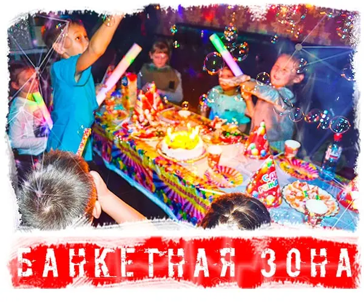
Готовим чайную зону
Детям предоставляется оформленная зона для торта и поздравления, а для родителей - отдельное место отдыха. Здесь праздник продолжается после игры без аренды отдельного кафе.
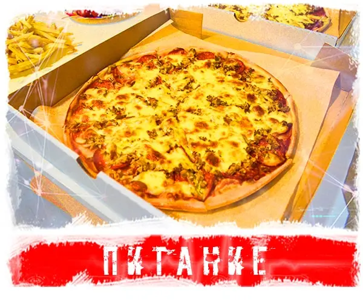
Решаем вопрос с едой
Питание входит в пакет: пицца, фри, нагетсы, печенье, напитки, посуда, обслуживание и чай. Свою еду и торт можно принести с собой.
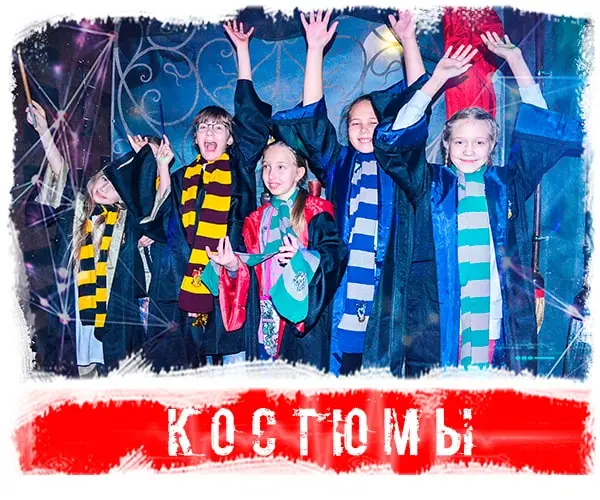
Погружаем детей в атмосферу
Костюмы и реквизит помогают гостям с первых минут почувствовать себя героями выбранного сценария и быстрее включиться в игру.
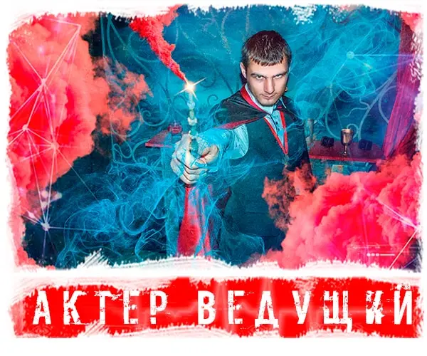
Подключаем актера-ведущего
Герой следит за ходом игры, ведет сюжет, объясняет задания, поддерживает темп и помогает детям проходить программу без растерянности.
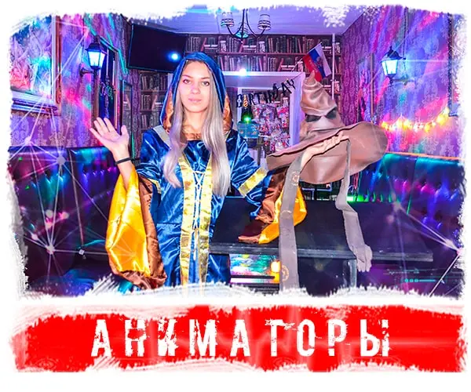
Добавляем анимацию
Аниматор связывает части праздника между собой, проводит конкурсы и помогает сделать программу веселой, живой и понятной для детей разного возраста.
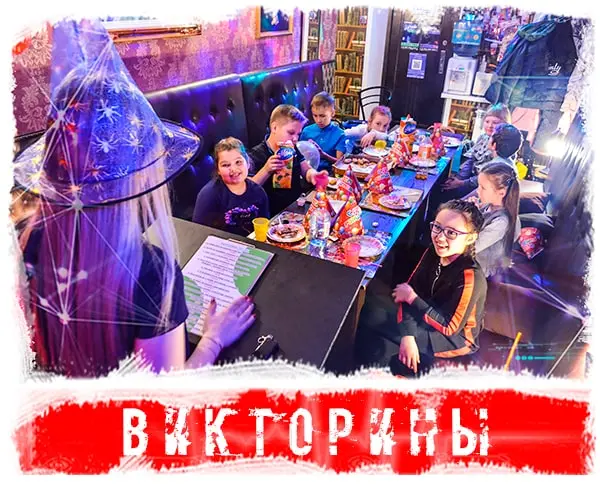
Проводим игры за столом
После активной части можно добавить викторины, шарады, мафию, настольные игры и спокойные задания, чтобы дети не скучали в чайной зоне.

Добавляем турниры и активность
Для подвижной компании можно включить NERF, лазертаг, прятки, командные задания или игровые турниры. Это хорошо работает для школьников и подростков.
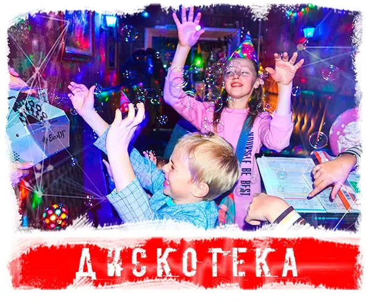
Делаем финальную дискотеку
В финале можно устроить дискотеку под любимую музыку, добавить мыльные пузыри или дым-машину, чтобы закончить праздник ярко и эмоционально.
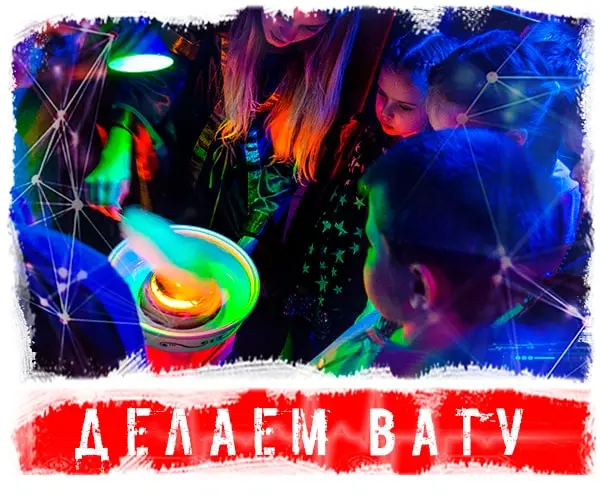
Добавляем сахарную вату
Мастер-класс по сахарной вате делает праздник вкуснее и интереснее: дети видят процесс, пробуют результат и получают еще один яркий момент.
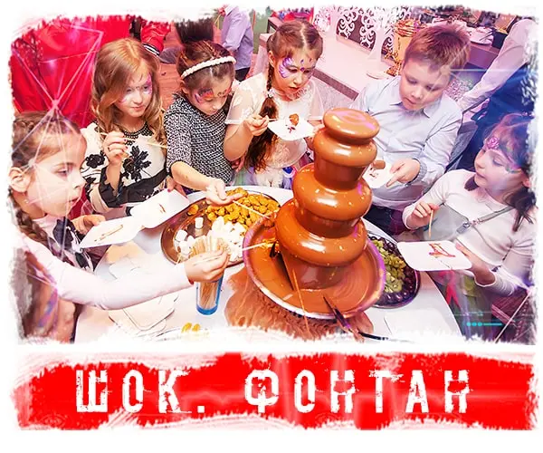
Украшаем праздник шоу
Шоколадный фонтан и другие вкусные дополнения помогают сделать программу богаче, особенно если нужен большой день рождения под ключ.
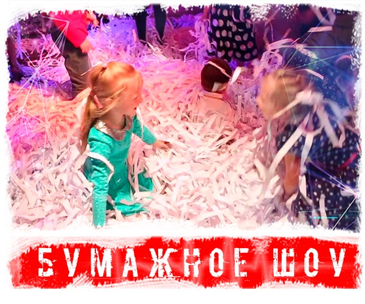
Бумажное шоу
Построим бумажные сугробы, закидаем друзей головокружительными белыми лентами под зажигательную музыку и веселые забавы аниматора.
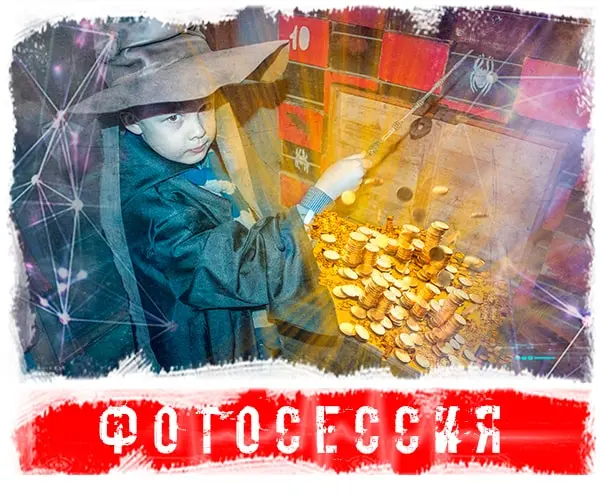
Сохраняем фото на память
Фотограф снимает игру, эмоции детей, поздравление именинника и общие кадры, чтобы у семьи остались яркие фотографии праздника.
Сценарии для праздника в Иркутске
Можно выбрать сюжетный квест, активную игру или собрать комбинированную программу. Ниже - сценарии, доступные для Иркутска.
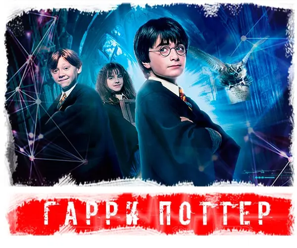
Волшебный квест с заданиями, тайниками и чайной зоной.
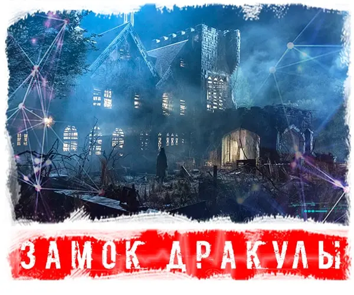
Мистический детский квест для подростков и любителей загадок.
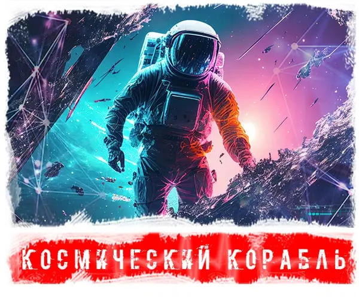
Командная миссия с фантастической атмосферой.
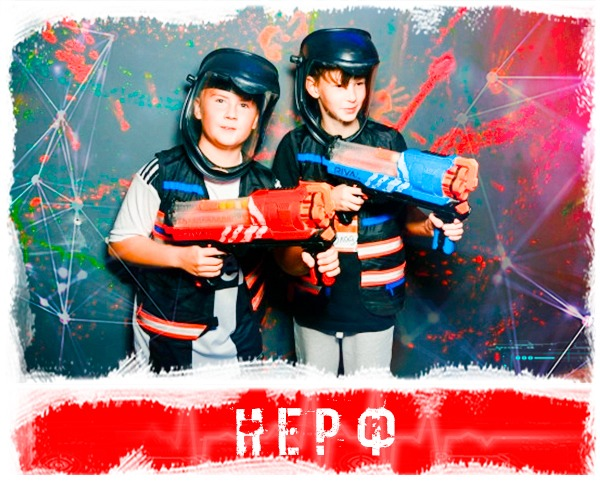
Активная игра с мягкими бластерами и укрытиями.
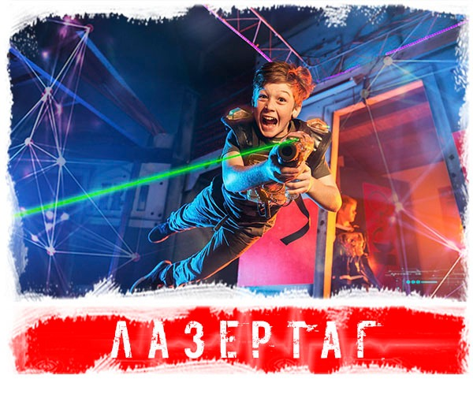
Безопасная командная битва с лазерным оборудованием.
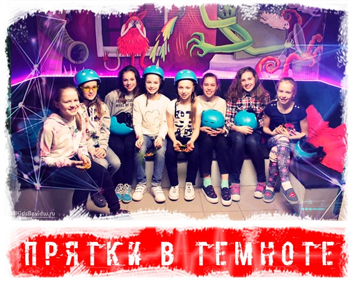
Подвижная игра в темноте для большой компании.
День рождения под ключ в Иркутске
В Иркутске праздник можно провести на площадках IQuest в мк-не Юбилейный и на ул. Баррикад. Администратор подберет адрес под выбранную дату, возраст и программу.
На странице собраны условия именно для Иркутска: адреса, карта, расписание, формат программы и детали для родителей.
Перед бронью лучше назвать дату, количество гостей, возраст участников и пожелания по программе - администратор подскажет свободное время и удобный тайминг.
Локальная информация
- Иркутск: мк-н Юбилейный, 17; ул. Баррикад, 33.
- Стоимость: 80 000 руб. за пакет с питанием
- Минимум: от 10 человек.
- Чайная зона и питание входят в пакет.
- Расписание на странице показывает только Иркутск.
Кратко о пакете Под ключ
| Пакет | Длительность | Игры | Дополнения | Гости | Цена |
|---|---|---|---|---|---|
| Под ключ | 4 часа | несколько игр и активностей | питание, дискотека, фото, бумажное шоу, сахарная вата | 10 включено | 80 000 руб. |
Схема проезда
День рождения под ключ в Иркутске проходит на площадках IQuest: Иркутск: мк-н Юбилейный, 17; ул. Баррикад, 33.
Иркутск
мк-н Юбилейный, 17
Площадка IQuest для праздников, квестов, активных игр и чайной зоны.
Открыть в Яндекс КартахИркутск
ул. Баррикад, 33
Вторая иркутская площадка IQuest для праздников, квестов и командных программ.
Открыть в Яндекс КартахКак проходит праздник
Вы выбираете подходящий пакет и формат развлечений, затем согласуете дату, время и площадку в Иркутске.
Администратор уточняет свободные слоты, возраст детей, количество гостей, чайную зону, торт, питание и дополнительные услуги.
В день праздника лучше приехать за 5 минут до начала. Команда встречает детей и родителей, помогает с вещами и проводит инструктаж.
Ведущий запускает выбранный квест, NERF, лазертаг, прятки или комбинированную программу, а фотограф делает кадры на память.
После игры дети поздравляют именинника, едят торт, отдыхают за столом, играют в настольные игры, мафию, викторины или шарады.
Родители могут присутствовать на площадке, отдохнуть, выпить чай, посмотреть фильм или поиграть в настольные игры, пока дети проходят программу.
Что есть в чайной зоне
В комнате для отдыха есть одноразовая посуда, кулер с водой, чай, сахар, салфетки, холодильник, микроволновка, фоновая музыка, настольные игры и место для хранения вещей.
Питание входит в пакет, а команда помогает подготовить стол к приходу гостей. Можно принести торт, свою еду и напитки.
Безопасность и настройка игры
- перед началом дети проходят инструктаж;
- ведущий следит за правилами и темпом программы;
- активные игры проходят в контролируемом формате;
- напряженность мистических сценариев можно обсудить заранее;
- программу адаптируем под возраст и характер компании.
Фото праздников под ключ
Галерея со старой страницы сохранена полностью: фото помогут оценить площадки, чайные зоны, игры и атмосферу праздников в Иркутске.
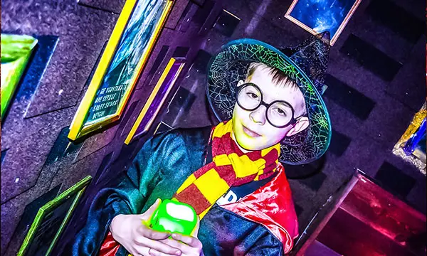
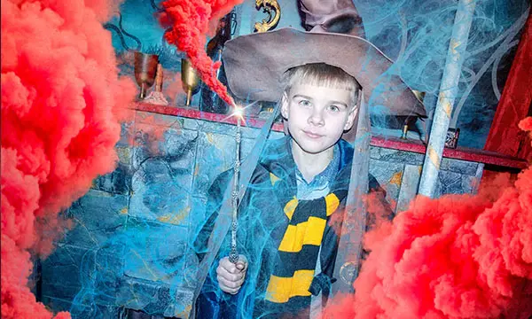

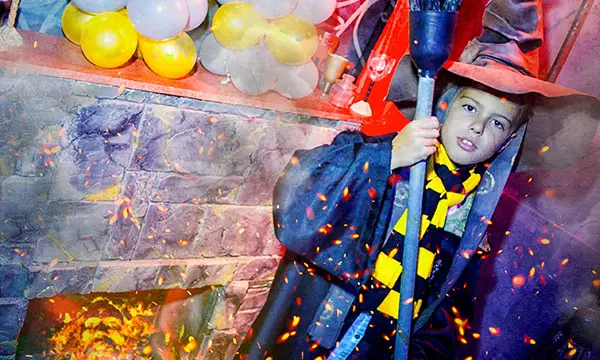
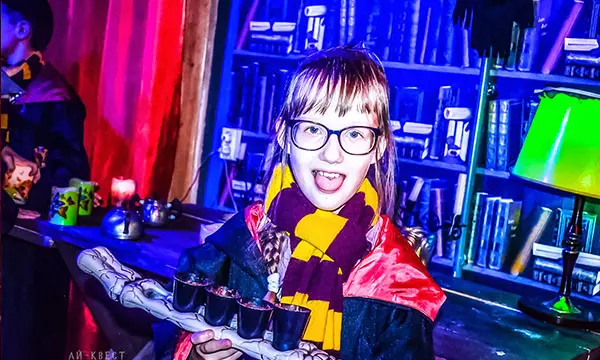

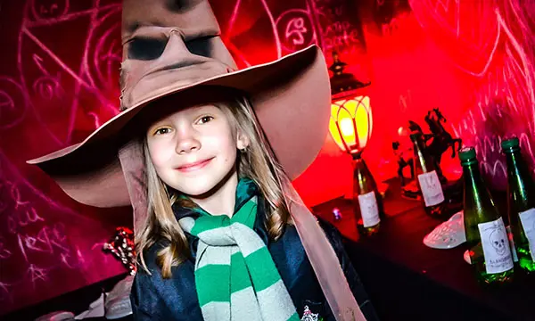
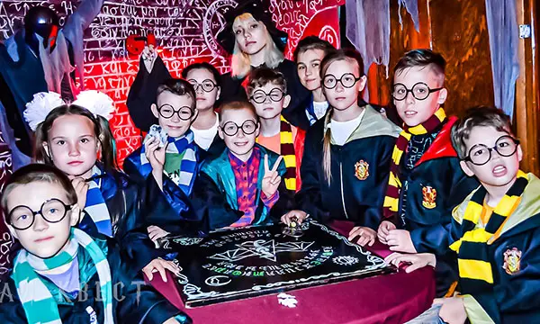
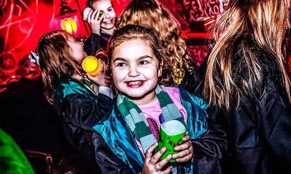
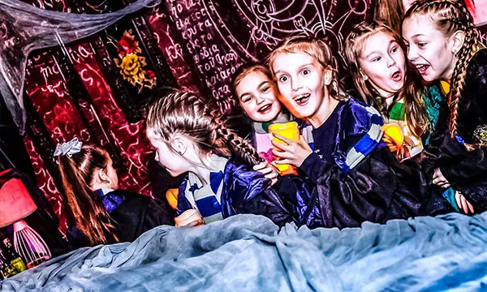


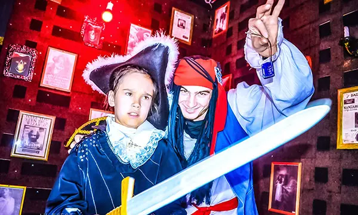
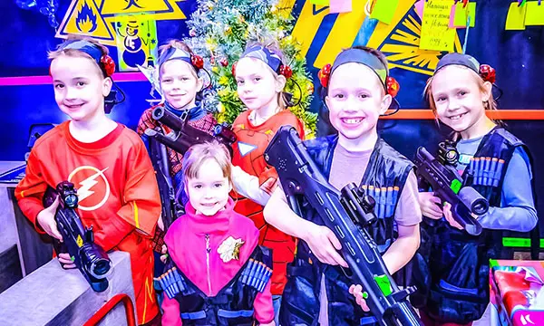
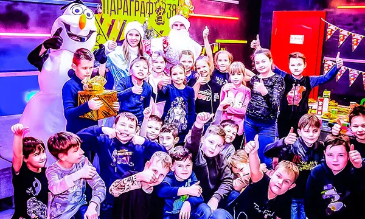
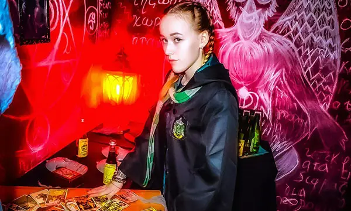
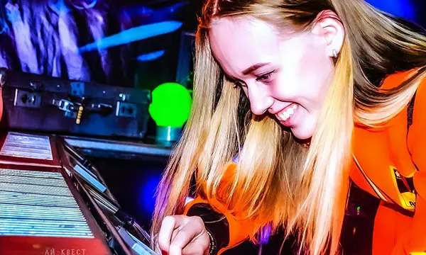
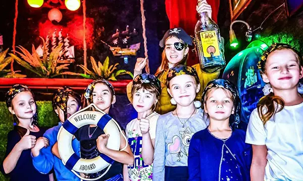
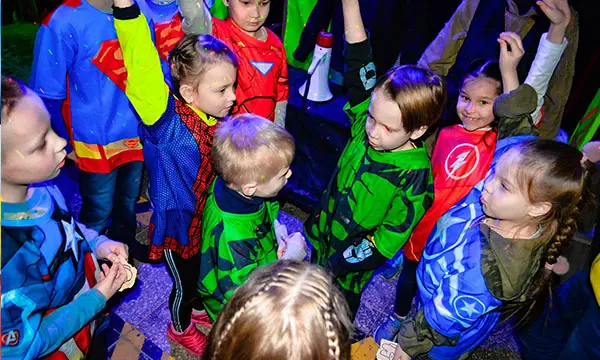
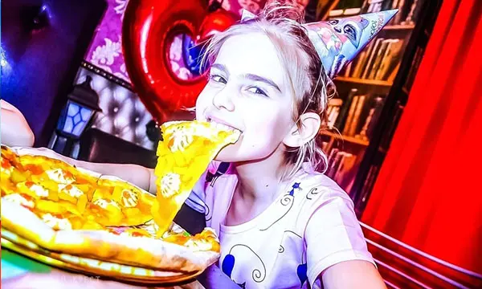
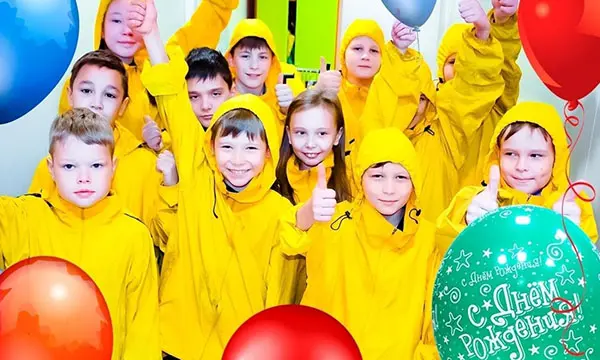
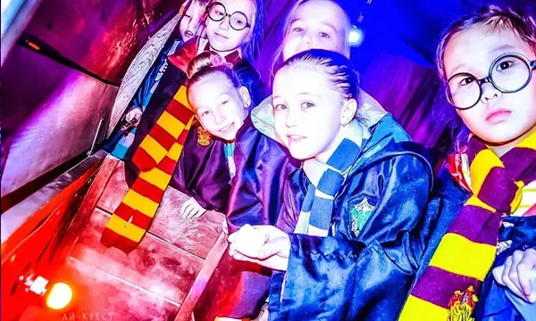
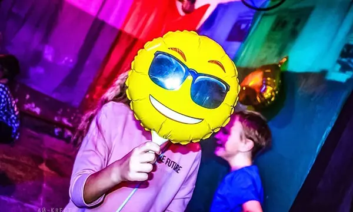
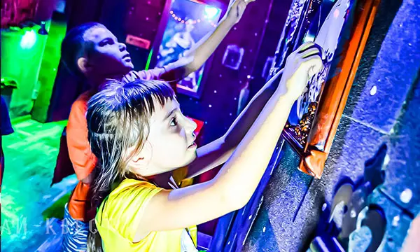
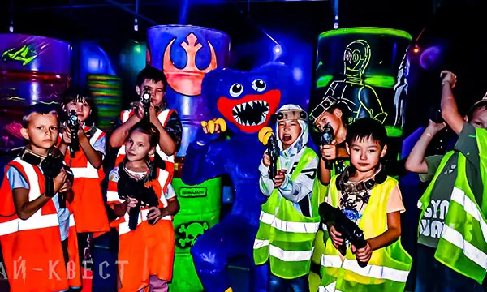
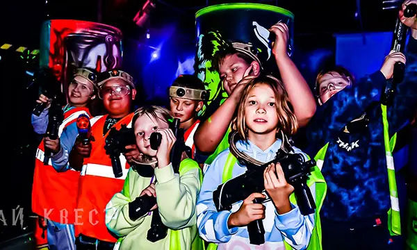
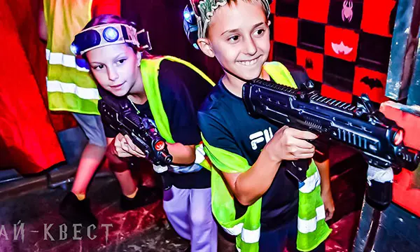
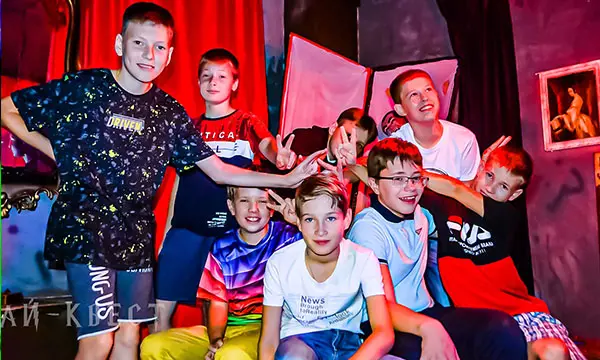
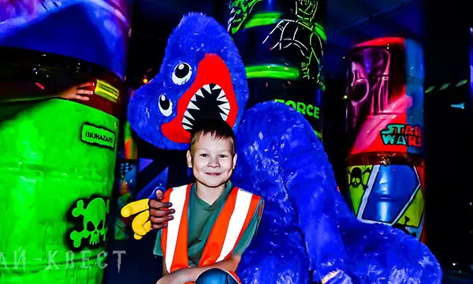
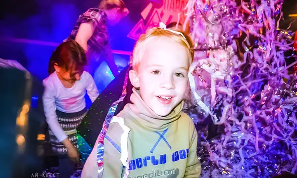
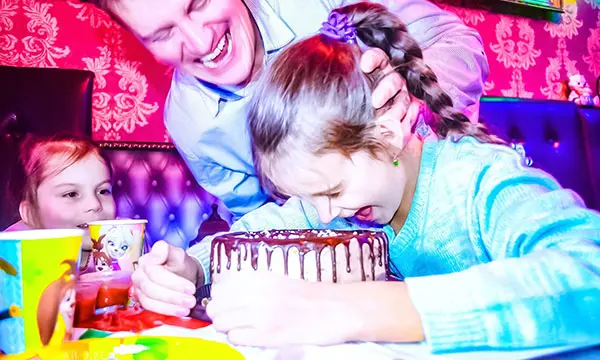
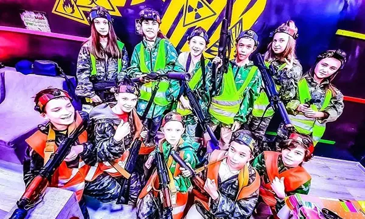
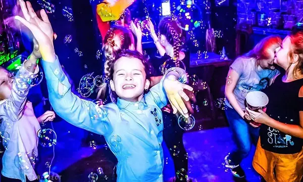
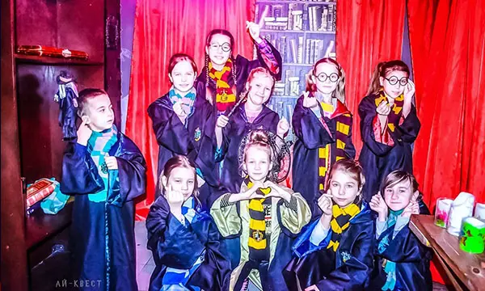
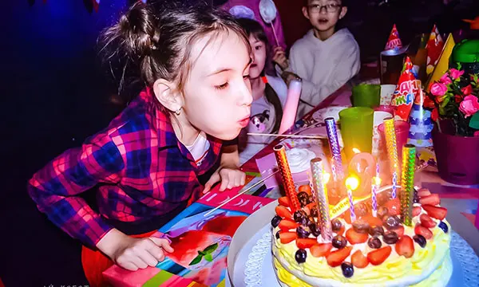
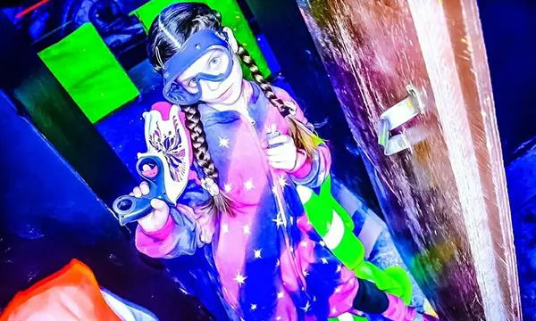


Похожие форматы в Иркутске
Если нужен не большой пакет на 4 часа, можно выбрать готовый Пакет 3 часа или отдельную активность для дня рождения.
День рождения под ключ в Иркутске: что важно знать перед бронью
В Иркутске пакет под ключ можно привязать к одной из двух площадок: Юбилейный, 17 или Баррикад, 33. Это помогает выбрать адрес под район гостей и сценарий.
Главное отличие от обычного квеста - тайминг на несколько часов: игры, чайная зона, поздравление, питание и дополнительные услуги собираются в одну программу.
Перед звонком удобно подготовить дату, возраст участников, примерное количество гостей и желаемый формат: только игра, игра с чайной зоной или праздник с дополнительными услугами.
Локальная проверка
- в Иркутске сценарий и время нужно сверить с адресом: Юбилейный, 17 или Баррикад, 33;
- Юбилейный - Свердловский район, 1 этаж; Баррикад - Куйбышевский район, 3 этаж, домофон 7;
- карта помогает выбрать район, а вход и место встречи лучше подтвердить перед приездом;
- актуальные отзывы лучше смотреть в карточках 2ГИС и Яндекс Карт;
- расписание в форме бронирования относится к выбранной странице;
- если нужна чайная зона, ее стоит согласовать вместе со временем игры.
Частые вопросы
Можно ли выбрать пакет дешевле?
Да, если не нужен большой праздник на 4 часа, посмотрите Пакет 3 часа в Иркутске за 25 000 руб.: квест с ведущим, активная игра, чайная зона, дискотека и фото.
Где посмотреть отзывы?
Отзывы по иркутским площадкам можно посмотреть в Яндекс Картах, 2ГИС и Google Картах по адресам мк-н Юбилейный, 17 и ул. Баррикад, 33.
Где можно отметить детский день рождения под ключ в Иркутске?
Праздник проходит на площадках IQuest: Иркутск: мк-н Юбилейный, 17; ул. Баррикад, 33.
Сколько стоит программа?
Пакет стоит 80 000 руб. Базовый расчет указан за 10 участников, питание входит в стоимость, доплата за следующего ребенка - 1500 руб./чел.
Что входит в питание?
В питание входят пицца, фри, нагетсы, печенье, газированная вода, сок, посуда, обслуживание и чай. Свою еду и торт тоже можно принести с собой.
Как забронировать дату?
Позвоните по номеру 8 (901) 666-888-1 или оставьте бронь на сайте. Администратор уточнит город, дату, возраст, количество гостей и формат программы.
Забронировать пакет Под ключ
Позвоните, и администратор поможет выбрать сценарии, свободное время и формат чайной зоны.
Позвонить 8 (901) 666-888-1